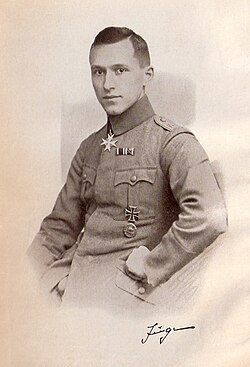

Jünger wurde zwischen April 1915 und August 1918 sieben Mal so schwer verwundet, dass er die Front verlassen musste. Er stieg vom Kriegsfreiwilligen zum Leutnant und Kompanieführer auf und erhielt 1918 den Pour le Mérite. Viele Tagesdaten sind nur in einer Quelle überliefert oder weichen voneinander ab.

Fast alle Darstellungen gehen letztlich auf Jüngers eigene Aufzeichnungen zurück. „Belegt“ heißt hier: Zwei Darstellungen stimmen überein; amtliche Akten wurden nicht eingesehen.
Im ersten Gefecht trifft ein Granatsplitter Jüngers linken Oberschenkel. Lazarett in Heidelberg.
Ort und Monat übereinstimmend. Den 25.04.1915 nennt nur horizon14-18.eu. Der Wikipedia-Artikel „In Stahlgewittern“ verlegt die Verwundung in die Champagne. Art der Wunde nur nach Jüngers Buch (über Wikipedia en).
Verwundung kurz vor dem britischen Angriff an der Somme, Abtransport ins Lazarett. Während dieser Zeit wird sein Zug bei Guillemont aufgerieben.
Combles nennen Wikipedia (de) und Wikipedia (en), Roads to the Great War nennt Guillemont, horizon14-18.eu nur den Monat. Ein Tagesdatum nennt keine Quelle.
Verwundung bei einem Spähtrupp im Wald von St-Pierre-Vaast bei Rancourt.
Den 12.11.1916 nennt nur horizon14-18.eu. Wikipedia (en) nennt einen Scharfschützen bei Rancourt.
Kopfverwundung beim deutschen Gegenangriff in der Schlacht von Cambrai; nach Wikipedia (en) zwei Treffer, ein Durchschuss des Helms und ein Splitter an der Stirn.
Zeitpunkt strittig: Ende November (Roads to the Great War, Wikipedia en) oder 09.12.1917 (horizon14-18.eu).
In der „Großen Schlacht“ wird Jünger zweimal verwundet, an der Brust und am Kopf.
Zwei Verwundungen übereinstimmend. Ort (bei Écoust) nur Roads to the Great War, Art der Wunden nur Wikipedia (en) nach dem Buch.
Lungenschuss bei einem Gegenangriff; Jünger entgeht schwer verwundet der Gefangennahme. Danach Lazarett in Hannover bis Kriegsende.
Datum: Wikipedia (en) und horizon14-18.eu. Favreuil nennt nur Wikipedia (en) nach dem Buch; die übrigen Quellen sprechen von „bei“ oder „vor Cambrai“. Favreuil liegt bei Bapaume, gut 25 km westlich von Cambrai.
Jünger zählte im Buch mindestens 14 Treffer, Streif- und Prellschüsse nicht eingerechnet. Sieben Verwundungen zwangen ihn, die Front zu verlassen.
Die Zählung stammt von Jünger selbst; die Quellen geben sie nur wieder. Wolf Scheller schreibt verkürzt „vierzehnmal verwundet“. Amtliche Verlustlisten wurden nicht eingesehen.
Nach der ersten Verwundung schlägt Jünger auf Rat seines Vaters die Offizierslaufbahn ein; Lehrgang in Döberitz, Rückkehr als Fähnrich im September 1915.
Ein genaues Datum nennt keine Quelle.
Beförderung zum Leutnant, Zugführer in der 2. Kompanie.
Das Tagesdatum nennen Wikipedia (de) und horizon14-18.eu; die anderen Quellen Ende November bzw. November 1915.
Die erste Stufe des Eisernen Kreuzes.
Nur die Ordensliste in Wikipedia (de) nennt ein Jahr (1916, zusammen mit der I. Klasse); HistoryNet nennt die Auszeichnung ohne Datum.
Verliehen nach der dritten Verwundung.
horizon14-18.eu: 16.12.1916; Wikipedia (de): „wenig später“ nach November 1916, Ordensliste 1916; Wikipedia (en): Januar 1917.
Jünger übernimmt die Führung einer Kompanie.
horizon14-18.eu: ab 18.12.1916 die 2. Kompanie; Wikipedia (de): im Frühjahr 1917 die 7. Kompanie.
Verliehen im Zusammenhang mit der Schlacht von Cambrai.
Wikipedia (de): 04.12.1917; horizon14-18.eu und Roads to the Great War nennen die Verleihung erst nach der Verwundung bei Cambrai, die horizon14-18.eu auf den 09.12.1917 datiert.
Höchste Stufe des Verwundetenabzeichens.
Das Jahr nennt nur die Ordensliste in Wikipedia (de).
Im Lazarett in Hannover erfährt Jünger von der Verleihung des höchsten preußischen Tapferkeitsordens. Anlass war nach mehreren Quellen der Gegenangriff vom August 1918.
HistoryNet nennt den 18.09.1918 als Datum der vom Kaiser unterzeichneten Urkunde; ob Verleihung und Benachrichtigung auseinanderfallen, ist nicht geklärt.
Staatliche Orden und Ehrenzeichen; Literaturpreise und Ehrenbürgerschaften sind nicht aufgeführt.
Als Kompaniechef am Westwall birgt Jünger einen Verwundeten und erhält dafür die Wiederholungsspange zum Eisernen Kreuz von 1914. Weitere Auszeichnungen aus dem Zweiten Weltkrieg nennt keine der Quellen.
Beide Angaben stammen aus Wikipedia (deutsch und englisch). Die Ordensliste nennt 1939; der Text verortet den Einsatz am Westwall zwischen November 1939 und Ende April 1940. Die NDB-Liste führt die Spange nicht auf.
Großes Verdienstkreuz des Verdienstordens der Bundesrepublik Deutschland.
Jahr in allen drei Quellen übereinstimmend.
Höherstufung innerhalb des Verdienstordens.
NDB und Wikipedia (de) nennen 1977; Wikipedia nennt den Stern nur in der Einleitung, ohne eigenen Einzelnachweis.
Landesauszeichnung Baden-Württembergs.
Nur in der Auszeichnungsliste der NDB gefunden.
Weitere Höherstufung innerhalb des Verdienstordens.
Jahr in NDB und Wikipedia (de) übereinstimmend.
Jünger trug den Orden später zusammen mit dem Pour le Mérite.
Jahr in NDB und Wikipedia (en) übereinstimmend. Dass er beide Orden zusammen trug, belegt nur eine Bildunterschrift in Wikipedia (en).
Orte und Daten stehen auch auf der Karte. Jüngers Texte sind urheberrechtlich geschützt; die Seite gibt Inhalte deshalb mit eigenen Worten wieder.